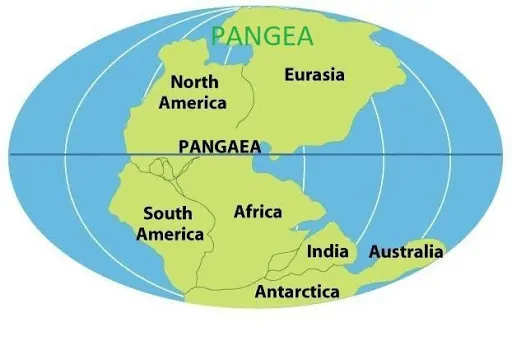

Approfondimento
Alfred Wegener, non Wagner, fu il pioniere della teoria della deriva dei continenti. Wegener ha presentato una serie di prove a sostegno della sua teoria, che nel tempo sono state riconosciute come fondamentali per la nostra comprensione della tettonica delle placche. Ecco le quattro principali prove presentate da Wegener:
Corrispondenza delle forme dei continenti: Wegener notò che i margini dei continenti dell'Africa e del Sud America sembravano adattarsi l'un l'altro come i pezzi di un puzzle. Ad esempio, le coste orientali del Sud America e dell'Africa sembrano adattarsi perfettamente, suggerendo che un tempo fossero unite.
Corrispondenza geologica: Wegener ha anche trovato similitudini nella geologia tra continenti separati. Ad esempio, rocce simili e formazioni montuose si trovano in aree geologicamente correlate su continenti diversi, come l'Appalachia negli Stati Uniti e le montagne Caledonidi in Gran Bretagna, Scandinavia e Groenlandia.
Corrispondenza paleontologica: Wegener notò che fossili simili di piante e animali preistorici si trovavano su continenti che ora sono separati da vaste distanze oceaniche. Ad esempio, fossili di una specie di felce del Carbonifero, Glossopteris, sono stati trovati in India, Africa, America del Sud, Australia e Antartide. Questo suggerisce che queste terre una volta erano vicine o connesse.
Corrispondenza dei glaciali: I depositi glaciali e le striature rocciose suggeriscono che regioni oggi lontane dai ghiacciai, come l'India e l'Australia, un tempo si trovassero in posizioni più fredde e vicine ai poli. Wegener ha notato che le linee di deposito glaciali sembravano continuare oltre le coste attuali dei continenti, indicando che i continenti si sono spostati.
Queste prove furono fondamentali nel sostenere la teoria della deriva dei continenti di Wegener. Anche se la sua teoria fu inizialmente respinta, con il tempo è stata riaffermata e sviluppata con ulteriori prove, portando alla comprensione moderna della tettonica delle placche.
